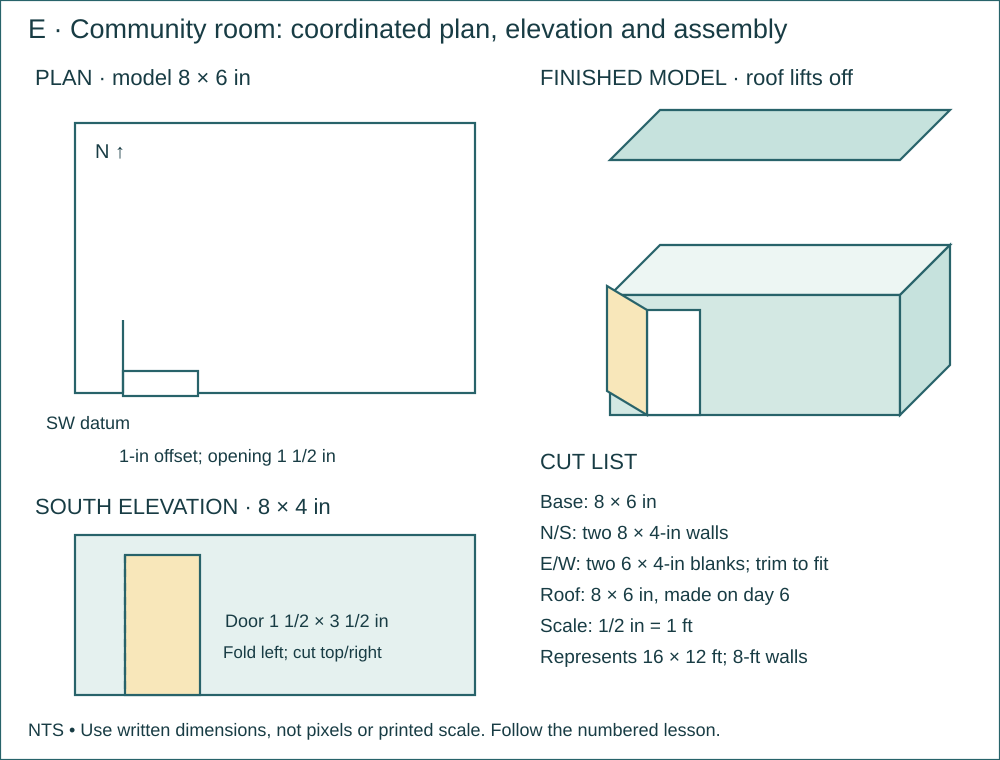

ETF Project 2 · structures, scale drawings and the building envelope
P2 · 04 · Build the Scale Room and Working Door
Make the 8 × 6-in community-room shell with 4-in walls, a hinged south door and movable table tokens.
Name: __________________ Date: __________ · 110 minutes
Why this job?
A coordinated plan and elevation must describe the same opening. You will transfer real dimensions to a physical model.
Daily kit · one crew
Each student: tape measure, pencil and graph notebook. Per crew: ruler, scissors and masking tape. Thin folder/card stock for the five room parts, previous floor layout/tokens, 48 in tape. Base 8 × 6 in; N/S walls 8 × 4 in; E/W blanks 6 × 4 in (trim to fit between N/S); roof 8 × 6 in. South door: left jamb 1 in from west end, opening 1 1/2 in wide × 3 1/2 in high. Roof is made on day 6.
Finished means
- A four-wall room model with working hinged south door and two tables; no roof yet.
- Coordinated top/front drawings and at least four model scale conversions.

Brief · 10 minutes · Today’s exact job
- Why this job: A coordinated plan and elevation must describe the same opening. You will transfer real dimensions to a physical model.
- Required today: Make the 8 × 6-in community-room shell with 4-in walls, a hinged south door and movable table tokens.
- Look at the supplied labeled drawing. Find the finished object or test setup before starting.
- Read the kit list. Take the listed continuing project out of storage; name missing items before beginning.
Notebook: Title/date; one sentence naming today’s exact object and its purpose.
Measure · 15 minutes · Measure and mark
- Mark base 8 × 6 in and N/S walls 8 × 4 in. Mark E/W blanks 6 × 4 in.
- On S mark door jambs at x=1 and 2 1/2 in, and lintel 3 1/2 in above the bottom edge.
Notebook: Feature | required value | actual value | units | datum/endpoints. Keep repeat readings.
Plan · 15 minutes · Read the plan and work the math
- Draw south elevation 8 × 4 in with the same door dimensions. Label all model dimensions in inches and write the full-size scale.
- Copy the five-part cut list and label outside faces N/S/E/W.
Notebook: Use the named sketch/table in the directions. Label views, dimensions, units and revision.
Worked example · practice values
These supplied values teach the method. Build from today’s required plan dimensions; record your own actual test data.
- Use a model scale of 1/2 in = 1 ft. Find the model dimensions for a 16 × 12-ft room and a 3-ft-wide door.
- 16 ft × 1/2 in/ft = 8 in; 12 ft × 1/2 in/ft = 6 in; 3-ft door = 1 1/2 in.
- Both plan and elevation must use the same chosen model scale.
Build along · one move at a time
Maker acts. Checker compares with the plan. Swap at the pause. Use the complete numbered directions below.

Mark the door on S. Cut the top and right jamb; fold the left jamb as the hinge.

Stand N and S on the base. Trim E and W to their actual inside gap before taping all four walls.

Return the tables to their plan positions. Open the door at least 90° and test the route with the person token.
Make · 45 minutes · Numbered bench directions
- Cut base and four walls. On S cut the right jamb and top of the door; fold along the left jamb to leave a hinged door flap. The bottom edge is already free.
- Tape N and S upright on top of the base with outer faces flush to the base edges; keep the door free of tape.
- Dry-fit E/W BETWEEN N/S. Mark the actual inside gap and trim their width so the shell closes without bowing.
- Tape E/W to base and adjoining walls. Use small inside and outside tape pieces at each joint.
- Label north and datum SW on the base. Return the two table tokens to their recorded positions.
- Swing the door inward at least 90 degrees. Move the person token from entrance to each table.
- Adjust only table positions if they block the door/route; update their positions on the plan.
Notebook: Label made parts and note any changed dimension. A short labeled sketch is enough; do not write an essay.
Test · 15 minutes · Test and inspect
- Base is 8 × 6 in and wall height 4 in, each within ±1/8 in. Door opening dimensions and offset are within ±1/16 in.
- Door opens 90 degrees without touching furniture; top and front drawings agree with actual door location.
Notebook: Copy the specified trial table; include each pass/fail or measured value and the change made.
Explain · 10 minutes · Show the finished work
- Put these on the bench: A four-wall room model with working hinged south door and two tables; no roof yet.
- Coordinated top/front drawings and at least four model scale conversions.
- Complete the independent transfer problem below. These supplied numbers are practice values; they do not change the required build dimensions.
- A 14-ft wall with an 8-ft height uses the model scale 1/2 in = 1 ft. Find model width and height. Explain what changes if a printed drawing is resized.
- Save one short individual answer with units, working and notebook page/date. Show the teacher your own physical measurement and plan interpretation. Store the labeled project and return shared supplies.
Notebook: Individual transfer calculation with units + page/date containing the practical evidence.